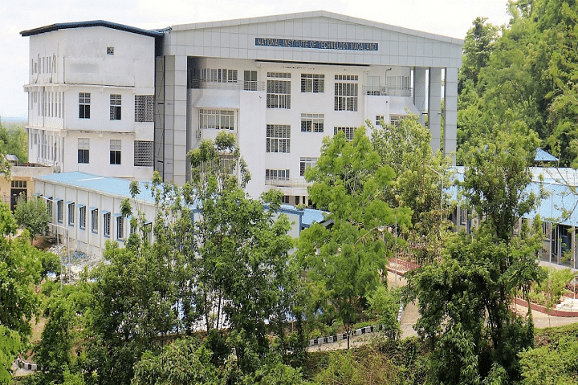

About the College

National Institute of Technology Nagaland, an Institute of National importance is a higher education technical Institute located at Chumukedima (Dimapur), Nagaland. It is one among the ten newly approved NITs by the Government of India in 2009 under the 11th Five Year Plan and it started functioning from the academic year 2010. Initially, this Institute started its journey under the mentorship of National Institute of Technology Silchar in Assam. It functioned in the campus of NIT Silchar for two years. Land for permanent campus was identified for the Institute during January 2012 and it is located at a hilly terrain area at Chumukedima near Dimapur, Nagaland.
The first academic session of the Institute in its permanent campus started on 20th September 2012. The land of 291 acres (which had been originally allotted for the Office of the Deputy Commissioner) was handed over by the Government of Nagaland with a few buildings to NIT Nagaland for the establishment of its permanent campus. The infrastructure for class rooms, hostels and dining blocks for Boys and Girls have been created with refurbishment of the existing RCC buildings and construction of a few pre-fabricated buildings. Pre-fabricated structures for new class room blocks, laboratories (Physics, Chemistry, Electrical Machines, Power Systems etc.) and hostels have been constructed.
A Little History
National Institute of Technology Nagaland (NIT Nagaland or NITN) is a higher education technology institute located in Chümoukedima, Nagaland, India.It is one of the 31 National Institutes of Technology in India. NIT Nagaland was set up by the Government of India in 2009, as part of the Eleventh Five-Year Plan (2007-2012) for imparting technical education in the state of Nagaland. NIT Silchar has provided initial mentorship to NIT Nagaland for the initial two years of its establishment.
The first batch of NIT Nagaland (2010-2014) studied at NIT Silchar for two years and then the NIT Nagaland has shifted to its home state, Nagaland in September 2012. NIT Nagaland is a federally funded technical university established by an Act of the Indian Parliament.
The institute is located at the Old DC Complex at Chumukedima, about 14 km (8.7 mi) from Dimapur.
The admin building of NIT Nagaland.
NIT Nagaland is managed by the NIT Nagaland Society registered under the Societies Act. The institute is fully funded by the Ministry of Human Resource Development, Government of India. At present, six undergraduate courses in engineering namely electronics & instrumentation engineering, electrical & electronics engineering, electronics & communication engineering, computer science & engineering, civil engineering and mechanical engineering and four master course namely power system engineering, VLSI systems, computer science and engineering, communication engineering, MSc (physics) and integrated M.Sc. course B.S.M.S (material science) is running in the institute.
On 13 October 2012, former Union minister of human resource development, communication and information technology Kapil Sibal inaugurated the NIT Nagaland at Chümoukedima. The NIT foundation laying function was attended by chief minister Neiphiu Rio, Lok Sabha member C. L. Ruala, top officials of the state government and the union HRD ministry.
B.Tech
- Computer Science Engineering (CSE)
- Electronics & Communication Engineering (ECE)
- Electrical and Instrumentation Engineering
- Electrical & Electronics Engineering (EEE)
- Mechanical Engineering(ME)
- Civil Engineering(CE)
M.Tech
- Computer Networks & Information Security (CN & IS)
- Digital Electronics and Communication Engieering (DE & CE)
- Power Electronics and Electrical Drives (PE & ED)
The primary objective of the institution is to impart value-based education to the present and future generations of our country. The Management works with a vision
to strive for excellence and coordinates all efforts in transforming the institute named after Mahatma.The Management extends their support and advices the student
committees in organizing any Technical,Cultural Festivals & Conferences.
While in the process of achieving the said visions, The institute constantly thrives to maintain the following values:
1.Leadership Qualities
2.Entrepreneurial Capabilites
3.Moral & Ethical Values
4.Academic Excellence
5.Technical Expertise
6.Creative Intelligence